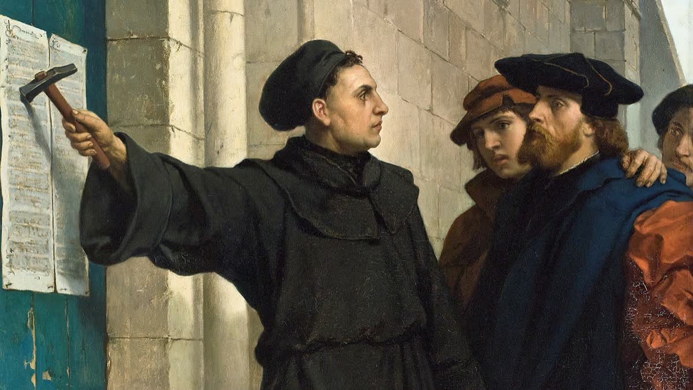
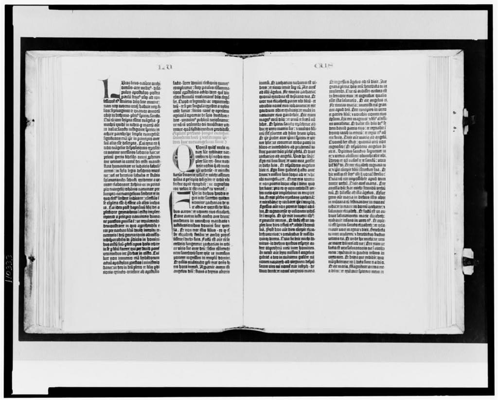

How Information Changed the World
Chapter One
A Monk, a Machine, and a Door
The Printing Press · 1450s–1500s
The Moment
It is October 31, 1517. A cold morning in Wittenberg, a small university town in what is now Germany. A young priest named Martin Luther — thirty-three years old, the son of a copper miner — walks to the wooden door of the Castle Church. In his hand is a piece of paper. On the paper are 95 sentences, each one an argument against a practice called indulgences.
Indulgences were payments. Ordinary people gave money to the Catholic Church, and in return the Church promised to reduce their punishment for sin — or the punishment of a loved one who had already died. By 1517, traveling preachers were moving from town to town selling indulgences like tickets. Luther believed the whole practice was corrupt. A church, he thought, should not be selling forgiveness.
He nails the paper to the door.
This is not, on its own, a dramatic act. The church door functions as a kind of public bulletin board in Wittenberg, and university scholars post arguments there all the time. Luther expects, at most, a quiet debate with a few colleagues.
What he does not expect is what happens next.
Within two weeks, copies of his 95 Theses are circulating in cities across Germany. Within two months, they have spread to France, England, and Italy. By the end of 1517, every major city in Europe has either read them or is talking about them. Luther himself is bewildered. He later wrote that the spread of his ideas felt like the work of "angels as postmen."
He did not know it yet, but something else was carrying his words. Something brand new. Something most people had barely heard of. And it was moving his words faster than any idea had ever traveled before.
That something was a machine. A printing press.

Before
To understand why Luther's small act mattered, you have to understand the world it landed in.
Before the printing press, books were made one at a time, by hand. A monk in a quiet room — a scriptorium — would sit at a desk for an entire year to copy a single Bible. One book. One year. One person.
This meant books were almost unimaginably expensive. A complete Bible could cost as much as a small farm. The vast majority of Europeans had never held a book in their lives. The vast majority could not read, partly because there was almost nothing to read.
It also meant that knowledge moved slowly. An idea you had in Rome might take ten years to reach Paris, if it ever did at all. Most knowledge — and most power — lived inside one institution: the Catholic Church. The Church owned most of the books, controlled who copied them, and decided what they said. If you wanted to know what the Bible said, you had to ask a priest. And the priest read it to you in Latin, a language almost no ordinary person spoke.
For about a thousand years, this was simply how the world worked.

The Tech
Then, in the 1440s, in the German city of Mainz, a goldsmith named Johannes Gutenberg invented a machine.
His idea, on paper, was simple. Instead of writing a page out by hand, what if you could assemble a page out of small metal letters — each letter cast separately so it could be used again and again? Lock the letters into a frame, brush them with ink, press a sheet of paper down on top, and you would have a printed page. Then you could rearrange the same letters to make the next page.
This is "movable type." The letters move.
Gutenberg's press, once it was running, could produce around 3,600 pages a day. A medieval scribe could produce maybe four. The press was almost a thousand times faster than the hand it replaced.
Within fifty years, there were printing presses in more than 250 cities across Europe. By the year 1500, somewhere between 8 and 20 million books had been printed — more books than all the scribes in European history had ever produced, combined.
The world had a new way to move ideas. Most people had no idea yet what that would mean.

The Ripples
The first ripple was Luther himself. His 95 Theses were printed and reprinted faster than anyone could keep up. Within a year, his pamphlets — short, cheap, vivid, written in everyday German rather than Latin — were the most-read documents in Europe. He became, in modern terms, the first viral author.
What had started as one priest's complaint about indulgences quickly grew into something much bigger. Whole regions of Europe began breaking away from the Catholic Church to form new Christian churches of their own. This movement became known as the Reformation — from the word reform, meaning to remake or fix something. Within a few decades, the religious map of Europe looked nothing like it had before.
Luther had argued that ordinary people should be able to read the Bible in their own language. So he translated it into German. Soon, vernacular Bibles — Bibles in the everyday languages of ordinary people — appeared in English, French, Dutch, Czech, and dozens of others. For the first time in a thousand years, people could read their own holy book without a priest standing between them and the page.
Literacy began to climb. Slowly at first, then sharply. New industries appeared: bookbinders, paper mills, newspapers, and coffeehouses where people gathered to read and argue. By the 1600s, ideas were moving across Europe at speeds no medieval king could have imagined.
Not everyone celebrated. The Catholic Church, watching its monopoly on knowledge crumble, fought back. In 1559, it published the Index of Forbidden Books — a long, growing list of titles Catholics were forbidden to read. Governments started banning printers. Books were burned in public squares. Some authors were burned along with them.
There were quieter losers too. The scribes, whose careers were now obsolete. The Church itself, which never recovered its 1450 level of power. The Latin language, which had been Europe's shared tongue for a thousand years and slowly stopped being one.
And then the real darkness arrived. By the 1530s, the same printing presses that had spread Luther's ideas were being used to spread something else: hate. Pamphlets attacking Jews. Pamphlets attacking so-called "witches." Pamphlets attacking rival Christians. Religious wars rolled across Europe for over a century, fueled in part by cheap printed propaganda on every side. The 1572 St. Bartholomew's Day Massacre in France, in which thousands of Protestants were killed in a single night, was made possible in part by pamphlets that had spent years teaching neighbours to fear each other.
The press did not cause this. But it moved it faster than anything before.
The Pattern
Look at the shape of what just happened.
For about fifty years, the printing press was a miracle. A new and breathtaking thing. People wrote about it the way people today write about artificial intelligence — with wonder, with fear, with a sense that the world had just changed under their feet.
Then it became ordinary. By 1550, most cities had a press. Printed books were no longer magic; they were furniture. Children grew up never knowing a world without them.
Then it was weaponized. Cheap pamphlets fuelled the Reformation. Then religious wars. Then propaganda. Then mass-printed hate.
Miracle. Ordinary. Weapon.
Remember this shape. We are going to see it five more times in this book, in five more technologies, over the next five hundred years. The faces change. The decades change. But the shape keeps coming back.
Why? That is what the rest of this book is trying to figure out.
Pattern Tracker
Chapter 1: The Printing Press
Now
The press itself is long gone. The pattern it set running is not. Watch for it as we go.
Reflect
- Why did Luther's ideas spread so quickly in 1517, when similar criticisms of the Church had been made by other people in earlier centuries and gone almost nowhere?
- If the printing press had never been invented, do you think the Reformation would still have happened? Defend your answer using evidence from the chapter.